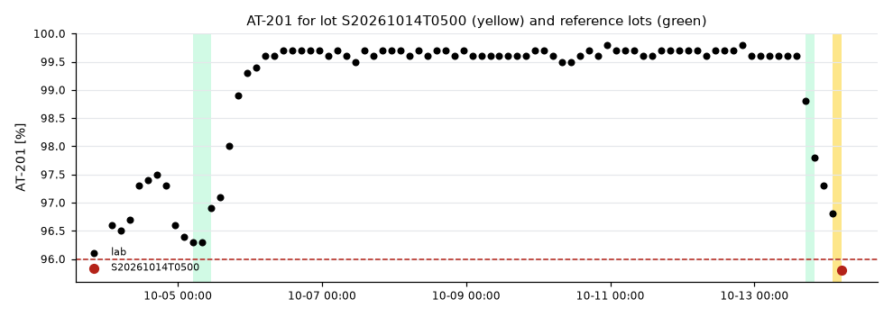
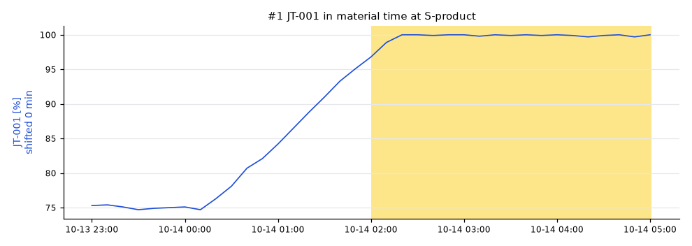
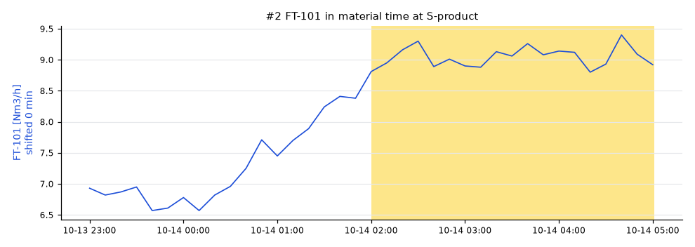
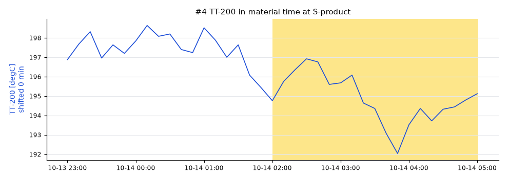

Lot S20261014T0500: AT-201 low
AT-201 was 95.8 % (spec ≥ 96) , sampled at SP-product on 2026-10-14 05:00.
The leading hypothesis, with low confidence: JT-001 moved high.
JT-001low JT-001 (EL-101) ran 24.8 % high from 2026-10-14 02:00, 0 min upstream of the sample point. [E002]FT-101low FT-101 (S-H2) ran 2.22 Nm3/h high from 2026-10-14 02:00, 0 min upstream of the sample point. [E003]D-401low no measured tag upstream moved enough to explain AT-201; something unmeasured changed in D-401 or just before the sample (a catalyst, a fouled surface, a feed component nobody analyzes)

Hypotheses
#1 JT-001 low
process · score 0.23 · path EL-101 → S-H2 → S-feed → R-201 → V-301 → E-301 → D-401 → S-product · dead time 0 min
JT-001 (EL-101) ran 24.8 % high from 2026-10-14 02:00, 0 min upstream of the sample point.
| Test | Strength | Detail |
|---|---|---|
| effect size | 0.00 | median moved 24.8 (+2.0 reference scales) |
| onset | not run | no quality onset |
| lag correlation | 0.61 | r = -0.62 over 12 earlier lab results |

#2 FT-101 low
process · score 0.23 · path S-H2 → S-feed → R-201 → V-301 → E-301 → D-401 → S-product · dead time 0 min
FT-101 (S-H2) ran 2.22 Nm3/h high from 2026-10-14 02:00, 0 min upstream of the sample point.
| Test | Strength | Detail |
|---|---|---|
| effect size | 0.01 | median moved 2.22 (+2.0 reference scales) |
| onset | not run | no quality onset |
| lag correlation | 0.60 | r = -0.60 over 12 earlier lab results |

#3 D-401 low
unmeasured disturbance · score 0.20 · path D-401 → S-product · dead time 0 min
no measured tag upstream moved enough to explain AT-201; something unmeasured changed in D-401 or just before the sample (a catalyst, a fouled surface, a feed component nobody analyzes)
#4 TT-200 low
process · score 0.00 · path S-feed → R-201 → V-301 → E-301 → D-401 → S-product · dead time 0 min
TT-200 (S-feed) ran 6.86 degC low from 2026-10-14 02:00, 0 min upstream of the sample point.
| Test | Strength | Detail |
|---|---|---|
| effect size | 0.01 | median moved -6.86 (-2.0 reference scales) |
| onset | not run | no quality onset |
| lag correlation | 0.00 | r = -0.67 over 12 earlier lab results, sign does not fit the deviation |

Ruled out
| Candidate | Why |
|---|---|
TT-301 | did not move in the lot |
TT-201 | did not move in the lot |
FT-102 | did not move in the lot |
How this was worked out
| Lot window | 2026-10-14 02:00 to 2026-10-14 05:01 at S-product |
|---|---|
| Quality onset | unknown |
| Regime | DRY.bypass = 0.03, FFC-102.ratio = 0.25, FIC-101.mode = 2, FIC-102.mode = 2, H2.rate = 9, TIC-201.mode = 1, TIC-201.sp = 395 |
| Reference lots | S20261013T2000 (97.8), S20261005T1100 (96.9), S20261005T0800 (96.3) |
| Candidates tested | 6 tags, on a 600 s grid in material time |
| Confidence | Confidence: high when the score is at least 0.4 and 0.025 ahead of the next hypothesis, medium from 0.25. Test weights: effect size 0.5, onset 0.3, lag correlation 0.3. Weights fitted on the homeostat train split (85 scenarios), thresholds chosen on the homeostat validation split (85 scenarios) (homeostat 0.1.0a3, bench plant 4144102c25e7). |
- some flows_to edges have no dead time; they count as 0 min
- 66 earlier lots skipped: different regime
- no online analyzer on the sampled stream: onset and correlation tests skipped
Data health on the candidate tags
| ID | Tag | Check | Severity | From | Detail |
|---|---|---|---|---|---|
| H0001 | JT-001 | flatline | warning | 2026-10-06 22:00 | value frozen at 100 for 80 min |
| H0002 | JT-001 | flatline | warning | 2026-10-08 00:30 | value frozen at 100 for 60 min |
| H0003 | JT-001 | flatline | warning | 2026-10-09 03:50 | value frozen at 100 for 2.0 h |
| H0004 | JT-001 | flatline | warning | 2026-10-11 03:20 | value frozen at 100 for 100 min |
| H0005 | JT-001 | flatline | warning | 2026-10-12 04:30 | value frozen at 100 for 60 min |
| H0006 | JT-001 | flatline | warning | 2026-10-13 02:00 | value frozen at 100 for 100 min |
| H0007 | JT-001 | flatline | warning | 2026-10-13 07:00 | value frozen at 100 for 70 min |